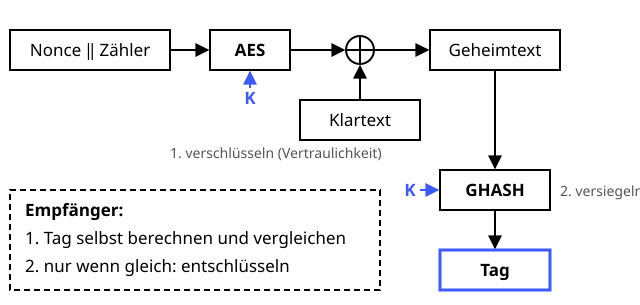

AES-GCM
Schutzziele: Authentizität Vertraulichkeit Integrität
Verschlüsseln und versiegeln in einem Topf.
Definition
AES im Galois/Counter Mode verschlüsselt die Daten (Vertraulichkeit) und berechnet gleichzeitig ein Authentisierungs-Tag (Integrität und Authentizität). Man nennt so etwas AEAD – Authenticated Encryption with Associated Data. Wird auch nur ein Bit im Geheimtext verändert, verweigert der Empfänger das Entschlüsseln. Da nur Schlüsselinhaber ein gültiges Tag erzeugen können, ist auch die Herkunft gesichert – allerdings nur gegenüber Außenstehenden.
Zutaten
- Geheimer AES-Schlüssel (128, 192 oder 256 Bit)
- Eine 96-Bit-Nonce, für jede Nachricht einmalig
- Klartext
- Optional: zusätzliche Daten (AAD), die geschützt, aber nicht verschlüsselt werden – z. B. ein Header
Zubereitung
- Den Schlüssel teilen, z. B. per Diffie-Hellman.
- Für jede Nachricht eine neue Nonce erzeugen.
- Den Klartext im Counter-Modus verschlüsseln:
AES(K, Nonce ‖ Zähler) ⊕ Klartext. - Über AAD und Geheimtext mit der GHASH-Funktion ein 128-Bit-Tag berechnen.
- Nonce, Geheimtext und Tag verschicken.
- Der Empfänger prüft zuerst das Tag und entschlüsselt nur, wenn es stimmt.
Skizze

Erst wird im Counter-Modus verschlüsselt, dann über den Geheimtext ein Tag berechnet. Der Empfänger prüft immer zuerst das Tag.
Skizze erstellt von Claude (KI)
Demo
Tipps
- Eine Nonce mit demselben Schlüssel zweimal zu verwenden ist katastrophal: Das verrät das XOR der Klartexte und erlaubt gefälschte Tags.
- Bei zufälligen Nonces den Schlüssel spätestens nach etwa 232 Nachrichten wechseln.
- Beide Seiten kennen denselben Schlüssel, deshalb könnte auch der Empfänger ein gültiges Tag erzeugen. Für einen Beweis gegenüber Dritten braucht man eine digitale Signatur.
- Gleichwertige Alternative, besonders ohne AES-Hardware: ChaCha20-Poly1305.
- Standard in TLS 1.3, SSH, WPA3 und vielen Messengern.